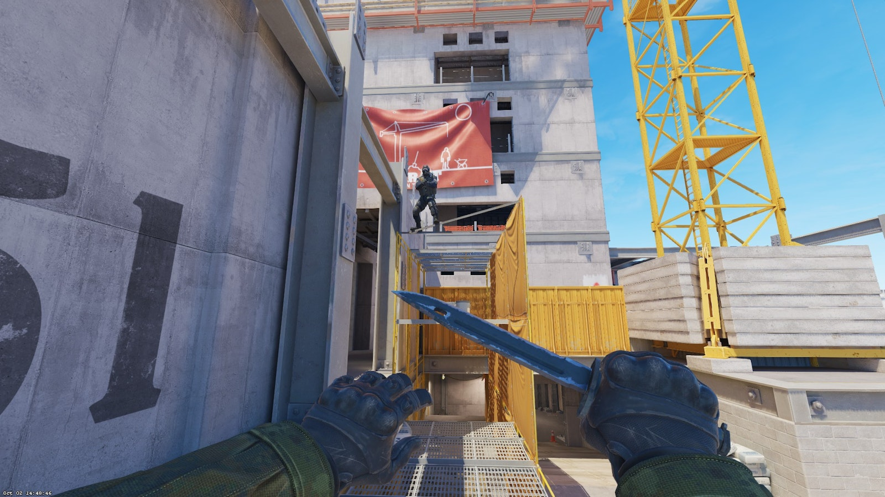

Dynamic momentum-based boosts for fast aggressive plays
A run boost is an advanced team mechanic where one player uses their running momentum to launch a teammate higher and farther than a standard boost. Unlike traditional static boosts where both players remain stationary, run boosts involve coordinated movement and timing to achieve greater height and distance.
This technique is particularly devastating in aggressive plays, allowing teams to reach unexpected positions with speed and surprise. Professional teams use run boosts to execute lightning-fast site takes or create chaos in enemy positions before defenders can react.
Explosive entry using run boost momentum
The physics behind run boosts utilize momentum transfer:
Critical: Timing is everything. Both players must coordinate perfectly.
The most common type where the runner moves forward while the jumper lands on their head. Used to reach elevated positions quickly or launch players into site. Runner continues moving forward while jumper gains vertical and horizontal distance.
Best For: Site entries, aggressive pushes, fast repositioning
Runner approaches a corner at speed while jumper uses the momentum to peek around or over obstacles. Extremely effective for surprising defenders holding static angles. The speed makes it nearly impossible to react to.
Best For: Breaking setups, overwhelming defenders, chaos creation
Specialized run boost to launch players through windows or gaps. Requires precise timing and angle approach. Most notably used on Mirage mid window and various Cache positions. High risk but devastating when successful.
Best For: Window entries, map control, surprise attacks
Specific positions where run boosts are commonly used in competitive play:
Runner Calls: "Running in 3... 2... 1... GO"
Jumper Response: "Ready" before countdown starts
Visual Cues: Jumper watches runner's movement to time jump
Audio Timing: Listen for footsteps to synchronize
Failed timing results in missed boost and exposed positions. Practice is essential.
Two consecutive run boosts executed rapidly. First player gets boosted to position, second player immediately follows with another run boost. Creates overwhelming pressure with multiple attackers reaching elevated positions simultaneously.
Requires: Three players minimum, precise timing, excellent communication
After being run boosted to position, the boosted player immediately engages while the runner transitions to a support role. Runner either follows up or holds flank. Maximizes the chaos created by the initial boost.
Teamwork: Runner must immediately shift roles after boost completes
Private Server Practice: Use offline server with teammates to drill timing repeatedly.
Countdown Method: Runner counts down to synchronize timing until automatic.
Slow to Fast: Start with walking run boosts, gradually increase to full speed.
Record Sessions: Record attempts to analyze timing issues and improve.
Competitive Application: Try in casual or unranked before ranked matches.
In professional CS2, run boosts are often part of set plays practiced hundreds of times. Teams like FaZe Clan and NAVI have signature run boost plays that they execute with perfect precision. The surprise factor alone can win crucial rounds, making run boosts a valuable tool in any team's tactical arsenal.
Runner sprints from palace while jumper times landing perfectly to reach ramp elevation. This provides an unexpected angle on A site defenders and can completely break CT setups. Requires perfect synchronization but is devastating when executed.
Fast run boost to reach elevated positions in apartments for aggressive B site pressure. The speed denies CT players time to set up proper crossfires. Often combined with utility to create overwhelming offensive pressure.
Run boosts work best in certain economic situations:
Run boosts are high-risk, high-reward plays. They should be used sparingly to maintain surprise advantage. Once opponents know your team uses run boosts, they'll anticipate and counter them. Save them for critical rounds where the element of surprise can turn the tide.